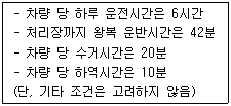
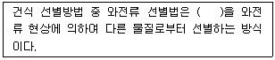
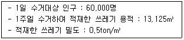
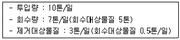
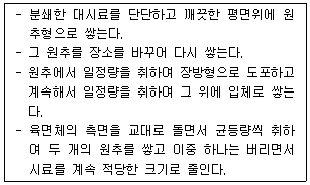
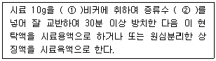
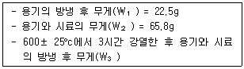
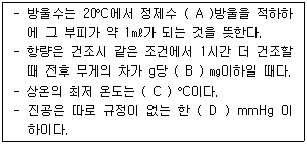
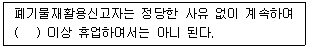

폐기물처리산업기사 (2008-09-07 기출문제)
1과목: 폐기물개론
1. 어느도시 쓰레기의 성분 중 비가연성이 약75%(중량비)를 차지하는 것으로 조사되었다. 밀도가 500kg/m3인 쓰레기 8m3가 있을 때 가연성 물질의 양(TON)은?
- 1
- 2
- 3
- 4
(정답률: 알수없음)

2. 폐기물 적재차량 중량이 22,000KG, 빈차의 중량이 14,000KG 이고, 적재함의 크기는 H : 150cm, W : 200cm, L : 400cm일때 차량 적재계수는?
- 0.35t/m3
- 0.45t/m3
- 0.53t/m3
- 0.67t/m3
(정답률: 알수없음)
3. 쓰레기를 소각했을 때 남은 재의 중량은 쓰레기 중량의 약 1/3 이다. 쓰레기 90ton을 소각했을 때 재의 용적 이 10m3 라고 하면 재의 밀도는?
- 1.5ton/m3
- 2.0ton/m3
- 2.5ton/m3
- 3.0ton/m3
(정답률: 알수없음)
4. 쓰레기 발생량을 예측하는 방법 중 쓰레기 배출에 영향을주는 모든 인자를 시간에 대한 함수로 나타낸 후 시간에 대한 함수로 표현된 각 영향인자들 간에 상관 관계를 수식화 한 것은?
- 경향법
- 추정법
- 동적모사모델
- 다중회귀모델
(정답률: 알수없음)
5. 쓰레기의 압축 전 밀도가 0.45ton/m3이었던 것을 압축 한 결과 0.85ton/m3로 되었다. 부피 감소율은 몇 % 인가?
- 약42%
- 약47%
- 약52%
- 약57%
(정답률: 알수없음)
6. 인구35만 도시의 쓰레기 발생량이 1.5kg/인·일 이고, 이 도시의 쓰레기 수거율은 90%이다. 적재용량이 10ton인 수거차량으로 수거한다면 하루에 몇 대로 운반해야 하는가?

- 6대
- 8대
- 10대
- 12대
(정답률: 알수없음)
7. ( )안에 알맞은 내용은?

- 자성이고 전기전도성이 우수한 금속
- 자성이고 전기전도성이 우수하지 못한 금속
- 비자성이고 전기전도성이 우수한 금속
- 비자성이고 전기전도성이 우수하지 못한 금속
(정답률: 알수없음)
8. 적환장 위치 선정시 고려해야 할 사항이 아닌 것은?
- 주도로의 접근이 용이하고 2차 또는 보조수송수단 연결이 쉬운 지역
- 주민의 반대가 적고 주위환경에 대한 영향이 최소인 곳
- 설치 및 작업이 쉬운 곳
- 수거하고자 하는 개별적 고형물 발생지역의 하중중심에서 먼 곳
(정답률: 알수없음)
9. A 도시에서 1주일 동안 쓰레기 수거상황을 조사한 다음, 결과를 적용한 1인당 1일 쓰레기 발생량(kg/인·일)은?

- 약 0.8
- 약 1.1
- 약1.6
- 약2.1
(정답률: 84%)
10. 다음 중 채취한 쓰레기 시료의 분석절차 순서로 가장 알맞은 것은?
- 시료→물리적조성→건조→밀도측정→분류→화학적조성분석
- 시료→건조→분류→물리적조성→전처리→화학적조성분석
- 시료→밀도측정→물리적조성→건조→분류→화학적조성분석
- 시료→전처리→건조→물리적조성→밀도측정→화학적조성분석
(정답률: 알수없음)
11. 국내 쓰레기 수거노선 설정시 유의할 사항으로 틀린 것은?
- 발생량이 많은 곳은 하루 중 가장 나중에 수거한다.
- 될 수 있는 한 한번 간 길은 가지 않는다.
- 가능한 한 시계방향으로 수거노선을 정한다.
- 적은 양의 쓰레기가 발생하나 동일한 수거빈도를 받기를 원하는 적재지점은 가능한 한 같은 날 왕복내에서 수거하도록 한다.
(정답률: 알수없음)
12. 쓰레기의 발생량과 성상에 관한 설명으로 틀린 것은?
- 일반적으로 수집빈도가 높을수록 또한 쓰레기통이 클수록 쓰레기 발생량이 증가한다.
- 도시의 규모가 커질수록 쓰레기 발생량이 증가한다.
- 생활수준이 증가할수록 쓰레기의 종류는 다양화 되고 발생량은 감소한다.
- 재활용품의 회수 및 재이용률이 증가할수록 쓰레기 발생량은 감소한다.
(정답률: 알수없음)
13. 폐기물 입경분석을 위해 체(sieve)분석한 결과 유효경은 1mm , 30%를 통과시킨 체 눈의 크기는 3mm. 60%를 통과시킨체 눈의 크기는 5mm, 90%를 통과시킨 체 눈의 크기는 10mm이였을 때 균등계수는?
- 2
- 3
- 5
- 10
(정답률: 알수없음)
14. 선별 효율을 나타내는 지표로 worrell의 제안식을 적용 한다면 선별결과가 다음과 같을 때, 선별효율은?

- 약 30%
- 약 50%
- 약 70%
- 약 90%
(정답률: 알수없음)
15. 약간 경사진 판에 진동을 줄 때 무거운 것이 빨리 판의 경사면 위로 올라가는 원리를 이용한 선별법은?
- pneumatic table
- floatation
- secator
- inertial separation
(정답률: 알수없음)
16. 우리나라에서 발생 되는 하수슬러지 처리방법 중 가장 큰 비중을 차지하고 있는 것은?
- 매립
- 소각
- 해양투기
- 재활용
(정답률: 알수없음)
17. Trommel screen에 대한 설명 중 틀린 것은?
- 스크린 다음에 분쇄기를 투어 분리된 폐기물을 주입, 분쇄함으로서 입도를 균일하게 한다.
- 원통의 경사도가 크면 효율도 떨어지고 부하율도 커진다.
- 스크린 중 선별효율이 우수하고 유지관리상 문제가 적다.
- 회전속도가 증가하면 어느 정도까지는 선별효율이 증가하나 일정속도 이상이 되면 원심력에 의해 막힘현상이 일어난다.
(정답률: 알수없음)
18. 전단식 파쇄기에 관한 설명으로 옳지 않은 것은?
- 충격파쇄기에 비해 이물질의 혼입에 강하며 폐기물의 입도가 고르다.
- 고정칼, 왕복 또는 회전칼과의 교합에 의하여 폐기물을 전단 한다.
- 주로 목재류, 플라스틱류 및 종이류를 파쇄하는데 이용된다.
- 충격파쇄기에 비해 대체적으로 파쇄속도가 느리다.
(정답률: 알수없음)
19. 수분함량이 80%인 슬러지 100m3을 30m3으로 농축하였다면 농축된 슬러지 함수율은?(단, 슬러지의 비중 1.0)
- 약 25%
- 약 28%
- 약 33%
- 약 39%
(정답률: 알수없음)
20. 물렁거리는 가벼운 물질로부터 딱딱한 물질을 선별하는데 이용 되며, 경사진 컨베이어를 통해 폐기물을 주입시켜 회전하는 드럼 위에 떨어뜨려 분류하는 선별 방식은?
- stoners
- jips
- secators
- float separator
(정답률: 알수없음)
2과목: 폐기물처리기술
21. 배연 탈황시 발생된 슬러지 처리(FGD)에 많이 사용되는 고화 처리 방법은?
- 석회 기초법
- 열가소성 플라스틱법
- 표면 캡슐화법
- 자가 시멘트법
(정답률: 알수없음)
22. 유기적 고형화에 대한 설명과 가장 거리가 먼 것은?
- 수밀성이 크며 다양한 폐기물에 적용 가능
- 상업화된 처리법의 현장자료가 빈약
- 일반 폐기물보다 방사선 폐기물처리에 적용함
- 미생물 및 자외선에 대한 안정성이 강함
(정답률: 알수없음)
23. 소화조 가스의 열량을 측정한 결과 6,300kcal/m3였다. 메탄가스의 함유량(%)은 얼마로 추정할 수 있는가? (단, 메탄가스 열량 = 9,000kcal/m3, 메탄이외의 가스는 불연소성이라 가정함)
- 50%
- 60%
- 65%
- 70%
(정답률: 알수없음)
24. 쓰레기 열분해 시 열분해 온도가 증가할수록 발생 가스 중 함량(구성비, %)이 증가하는 것은?
- 수소
- CH4
- C2H6
- 이산화탄소
(정답률: 알수없음)
25. 어느 매립지의 쓰레기 수용량은 1,635,200m3이고 수거 대상 인구가 200,000명, 1인 1일 쓰레기배출량을 2.0kg로 매립시의 쓰레기 부피감소율을 30%라 할때 매립장의 사용 년 수는? (단, 쓰레기 밀도 500kg/m3으로 수거시의 밀도임)
- 6년
- 7년
- 8년
- 9년
(정답률: 알수없음)
26. 메탄 1Sm3를 공기과잉계수 1.5로 연소시킬 경우, 실제습윤연소 가스량(Sm3)은 약 얼마인가?
- 12.4
- 15.3
- 18.5
- 19.6
(정답률: 알수없음)
27. 열분해공정이 소각에 비해 갖는 장점이 아닌 것은?
- 황분, 중금속이 재(ASH)중에 고정될 확률이 낮다.
- 환원성 분위기로 Cr+3가 Cr+6로 변화하지 않는다.
- 배기가스량이 적다.
- NOX 발생량이 적다.
(정답률: 알수없음)
28. 합성 차수막의 CRYSTALLINITY가 증가할수록 나타내는 성질로 틀린 것은?
- 충격에 강해짐
- 화학물질에 대한 저항성 증가
- 인장강도 증가
- 투수계수 감소
(정답률: 알수없음)
29. 인구가 300,000인 도시의 폐기물 매립지를 선정하고자한다. 도시의 1인당 폐기물 발생량은 3kg/day 이였으며 폐기물의 밀도는 500kg/m3이었다. 매립지는 지형상 2m 정도 굴착 가능하다면 매립지 선정에 필요한 최소한의 면적(m2/year)은?
- 169,500
- 219,000
- 288,000
- 328,500
(정답률: 알수없음)
30. 처리용량이 20kℓ/day인 분뇨처리장에 가스저장 탱크를 설계하고자 한다. 가스 저류기간을 6hr으로 하고 생성 가스량을 투입량의 8배로 가정한다면 가스탱크의 용량은?
- 40m3
- 60m3
- 80m3
- 120m3
(정답률: 알수없음)
31. 30g 의 에탄(C2H6)을 완전 연소시키기 위한 이론공기량은? (단, 0°C. 1기압 기준)
- 78.4L
- 156.8L
- 373.3L
- 436.2L
(정답률: 알수없음)
32. 쓰레기를 소각할 경우 발생하는 기체로 가장 적절하지 않은 것은?
- NOX
- CH4
- CO2
- CO
(정답률: 알수없음)
33. 200kℓ처리용량의 분뇨처리장에서 발생 되는 메탄을 사용하는 보일러에서 기대할 수 있는 열생산량은? (단, 가스생산량 = 8m3/kℓ(분뇨), CH4 함량 = 75%, CH4 열량 = 9,000kcal/m3, 보일러 열교환 효율 = 80%, 기타조건 고려 안함)
- 4.31 × 106 kcal
- 6.79 × 104 kcal
- 8.64 × 106 kcal
- 9.75 × 104 kcal
(정답률: 알수없음)
34. 소각로의 연소능력이 200KG/m2·h이며, 쓰레기량이 10,000kg/일 이다. 1일 8시간 소각하면 로의 면적은?
- 약 6.3m2
- 약 7.3m2
- 약 8.3m2
- 약 9.3m2
(정답률: 알수없음)
35. CSPE 합성 차수막의 장. 단점으로 틀린 것은?
- 접합이 용이하다.
- 미생물에 강하다.
- 산 및 알카리에 약하다.
- 기름, 탄화수소 및 용매류에 약하다.
(정답률: 알수없음)
36. RDF의 구비조건이 아닌 것은?
- 대기오염이 적을 것
- 함수량이 낮을 것
- 발열량이 낮을 것
- 재의 양이 적을 것
(정답률: 알수없음)
37. 함수율이 90%인 슬러지 1,000m3을 함수율 20%로 처리하여 매립하였다면 매립된 슬러지의 중량은 몇 톤인가? ( 단. 슬러지 비중 1.0)
- 100
- 125
- 130
- 135
(정답률: 알수없음)
38. 어떤 분뇨처리장으로 VS가 1.4g/ℓ인 분뇨가 50kℓ/일 유입될 때 소화조(1단계소화 →2단계소화,직렬방식)에서 발생 되는 총 CH4 가스 양은? (단,1 단계 소화조 및 2단계 소화조에서의 VS 제거율은 각각 55%, 20%이고 CH4 가스 생산량은 각각 1m3/kg - VS제거, 0.5m3/kg - VS제거 이다.)
- 약 19m3/일
- 약 279m3/일
- 약 37m3/일
- 약 42m3/일
(정답률: 알수없음)
39. 다음 중 우리나라 음식물 쓰레기를 퇴비로 재활용하는데 있어서 가장 큰 문제점으로 지적되는 사항은?
- 염분함량
- 발열량
- 유기물함량
- 밀도
(정답률: 알수없음)
40. 어느 분뇨 처리장에서 잉여슬러지량은 분뇨 처리량의 30% 이며 함수율은 99%이다. 이것을 농축조에서 함수율 98%로 농축하여 탈수기로 탈수시키고자 한다. 탈수기는 일주일 중 6일 운전하고 1일 5시간씩 가동한다면 탈수기의 슬러지처리능력은 어느 정도로 하면 되는가? (단, 비중은 1.0, 1일 분뇨 처리량은 100kL이다.)
- 0.8m3/hr
- 1.8m3/hr
- 2.7m3/hr
- 3.5m3/hr
(정답률: 50%)
3과목: 폐기물 공정시험 기준(방법)
41. 다음의 설명하고 있는 시료 축소방법은?

- 구획법
- 교호삽법
- 원추 2분법
- 원추 4분법
(정답률: 알수없음)
42. 이온전극법으로 NO2-이온(감응막의 조성 : ph감응유리)을 측정 하는데 가장 적당한 전극은?
- 고체막 전극
- 격막형 전극
- 유리막전극
- 활성막전극
(정답률: 알수없음)
43. 다음은 반고상 또는 고상폐기물의 ph측정에 관한 내용이다. ( )안에 가장 적절한 내용은?

- ①50mL, ② 25mL
- ①50mL, ② 30mL
- ①100mL, ② 30mL
- ①100mL, ② 50mL
(정답률: 알수없음)
44. 원자흡광광도법에 의한 시료중 크롬 정량에 관한 설명으로 틀린 것은?
- 철, 니켈 등의 공존물질에 의한 방해영향이 크므로 과망간산칼륨 5%(W/V%)를 첨가하여 측정한다.
- 정량범위는 357.9nm에서 0.2 ~ 5mg/ℓ이다.
- 유효측정농도는 0.01mg/ℓ이상으로 한다.
- 크롬중공음극램프를 사용한다.
(정답률: 54%)
45. 폐기물 용출시험방법에 관한 설명으로 틀린 것은?
- 진탕회수는 매분당 약 200회로 한다.
- 진탕후 1.0㎛ 유리섬유 여과지로 여과한다.
- 진폭이 4~5cm의 진탕기로 4시간 연속 진탕한다.
- 여과가 어려운 경우에는 매분당 3,000회전 이상으로 20분 이상 원심분리한다.
(정답률: 알수없음)
46. 5톤 이상의 차량에 적재된 폐기물은 평면상으로 몇 등분하여 시료를 채취하는가?
- 4등분
- 6등분
- 9등분
- 12등분
(정답률: 알수없음)
47. 흡광광도법으로 분석되는 항목-측정방법-측정파장-발색의 연결이 맞는 것은?
- 카드뮴 - 디티존법 - 460nm - 청색
- 시안 - 디페닐카바지드법 - 540nm - 적자색
- 구리 - 디에틸디티오카르바민산법 - 440nm - 황갈색
- 비소 - 비화수소증류법 - 510nm - 적자색
(정답률: 알수없음)
48. 가스크로마토그래프 분석에 사용되는 검출기 중 유기할로겐화합물, 니트로화합물 및 유기금속화합물을 선택적으로 검출하기에 가장 적절한 것은?
- ECD(전자포획 검출기)
- FPD(불꽃 광도 검출기)
- FID(불꽃이온화 검출기)
- TCD(열전도도 검출기)
(정답률: 84%)
49. 흡광광도법에서 사용하는 흡수셀은 오염되기 쉬우므로 미리 깨끗하게 씻은 후 사용하여야 한다. 이 때 흡수셀 세척에 사용되는 용액으로 가장 적합한 것은?
- 사염화탄소 용액
- 아세톤 용액
- 노르말 헥산 용액
- 탄산나트륨용액
(정답률: 알수없음)
50. 수분 40%, 고형물 60%인 쓰레기의 유기물 함량을 측정하기 위해 다음과 같이 강열감량을 측정하였다. 대상 쓰레기의 유기물 함량(%)은?(오류 신고가 접수된 문제입니다. 반드시 정답과 해설을 확인하시기 바랍니다.)

- 13.5
- 22.8
- 37.3
- 48.7
(정답률: 알수없음)
51. 다음 중 유도 결합 플라즈마 발광광도법(ICP)에 대한 설명으로 틀린 것은?
- ICP분석장치는 중심에 고온, 고전자 밀도 영역이 형성되어 도넛 형태가 된다.
- 플라즈마의 온도는 최고 15,000KDP 이르며 보통 시료는 6,000~8,000K의 고온에 주입된다.
- ICP는 알곤 가스를 플라즈마 가스로 사용하여 수정발진식 고주파발생기로부터 발생된 주파수 27.13MHZ 영역에서 유도코일에 의하여 플라즈마를 발생시킨다.
- 플라즈마는 그 자체가 광원으로 이용되기 때문에 매우 넓은 농도범위에서 시료를 측정할 수 있다.
(정답률: 알수없음)
52. 디에틸디티오카르바민산은 법(흡광광도법)으로 적자색의 흡광도를 530nm에서 측정하는 항목은?
- 크롬
- 구리
- 비소
- 시안
(정답률: 알수없음)
53. 대상폐기물의 양이 600톤인 경우, 시료의 최소 수는?
- 20
- 25
- 30
- 36
(정답률: 알수없음)
54. 가스크로마토그래피법으로 측정하여야 하는 시험 항목은?
- 구리
- 유기인
- 시안
- 크롬
(정답률: 알수없음)
55. 휘발성 저급염소화 탄화수소류를 가스크로마토그래피법을 이용하여 측정하고자 할 때 사용하는 운반가스는?
- 수소
- 산소
- 질소
- 알곤
(정답률: 알수없음)
56. 다음의 총칙에 대한 설명이 맞는 것은?
- 기밀용기는 취급 또는 저장하는 동안에 밖으로부터의 공기 또는 다른 가스가 침입하지 아니하도록 내용물을 보호하는 용기를 말한다.
- “고상폐기물”이라 함은 고형물의 함량이 10%이상인 것을 말한다.
- 백분율중 용액 100g중 성분용량(㎖)을 표시할 때는 W/V%로 표시한다.
- 십억분율은 ㎎/ℓ, ㎎/㎏ 또는 ppm의 기호를 쓴다.
(정답률: 알수없음)
57. 흡광광도법에 의한 시안 측정시 넣는 시약중 잔류염소에 의한 영향을 줄이기 위해 가하는 시약은?
- 질산(1+4)
- 클로라민T
- L-아스코르빈산
- 초산아연 용액
(정답률: 알수없음)
58. 기름 성분 측정을 위한 노말헥산 추출시험방법에 대한 설명으로 틀린 것은?
- 80°C 로 유지시킨 전기열판 또는 전기맨틀을 사용하여 노말헥산을 날려 보낸다.
- 폐기물중의 비교적 휘발 되지 않는 탄화수소와 탄화수소 유도체 및 그리스유상물질이 노말헥산층에 용해되는 성질을 이용한 방법이다.
- 노말헥산 추출물질 함량이 낮은 경우 염화제이철용액을 넣고 교반하면서 묽은 염산으로 PH 4이하로 조절한다.
- 정량범위는 5 ~ 200 ㎎이다.
(정답률: 알수없음)
59. 다음은 폐기물공정시험기준(방법)상의 규정이다. A, B, C, D중 가장 큰 수는?

- A
- B
- C
- D
(정답률: 알수없음)
60. PH시험방법에 관한 설명이 틀린 것은?
- PH는 수소이온농도를 그 역수의 자연대수로써 나타내는 값이다.
- PH는 보통 유리전극과 비교전극으로 된 PH미터를 사용하며 양 전극간의 기전력 차이를 이용한다.
- PH미터는 임의의 한 종류의 PH표준용액에 대하여 검출부를 물로 잘 씻은 다음, 5회 되풀이하여 PH를 측정하였을 때 그 재현성이 ± 0.⑤이내인 것을 쓴다.
- PH 11이상의 시료는 오차가 크므로 알카리에서 오차가 적은 특수전극을 쓰고 필요한 보정을 한다.
(정답률: 알수없음)
4과목: 폐기물 관계 법규
61. 매립시설의 설치검사기준 중 차단형 매립시설에 대한 검사항목이 아닌 것은?
- 바닥과 외벽의 압축강도, ENrp
- 내부막의 구획면적, 매립가능용적, 두계, 압축강도
- 빗물유입 방지시설 및 덮개설치내역
- 차수시설의 재질, 두께, 투수계수
(정답률: 알수없음)
62. 다음 중 지정폐기물에 관한 설명으로 옳은 것은?
- 광재는 모두 지정폐기물에 해당한다.
- 폐산의 경우 수소이온농도지수가 3.0이하인 것은 지정폐기물로 분류된다.
- 분진은 소각시설에서 발생되는 것으로 한정한다.
- 폴리클로리네이티드비페닐 함유 폐기물에서 1리터당 2밀리그램 이상 함유한 액체상태의 것은 지정폐기물에 해당한다.
(정답률: 알수없음)
63. 폐기물처리업의 업종구분과 영업내용의 범위를 벗어나는 영업을 한 자에 대한 벌칙 기준은?
- 7년 이하의 징역 또는 5천만원 이하의 벌금에 처함
- 5년 이하의 징역 또는 3천만원 이하의 벌금에 처함
- 3년 이하의 징역 또는 3천만원 이하의 벌금에 처함
- 2년 이하의 징역 또는 1천만원 이하의 벌금에 처함
(정답률: 알수없음)
64. 폐기물 처리업자가 폐기물의 수집. 운반. 처리상황 등을 기록한 장부의 보존기간은? (단, 최종 기재일 기준)
- 1년
- 2년
- 3년
- 5년
(정답률: 알수없음)
65. 폐기물 처리시설의 중간처리시설 중 소각시설에 해당 되지 않는 것은?
- 열분해시설(가스화 시설을 포함한다)
- 용융시설
- 일반 소각시설
- 고온 소각시설
(정답률: 알수없음)
66. 의료폐기물 발생 의료기관 및 시험 검사기관 기준으로 옳지 않은 것은?
- 수의사법에 따른 동물 병원
- 검역법에 따른 검역소
- 노인복지법에 따른 병상이 10개 이상인 노인요양시설
- 의료법에 따라 설치된 기업체의 부속 의료기관으로서 면적이 100제곱미터 이상인 의무시설
(정답률: 알수없음)
67. 다음은 폐기물재활용신고자의 준수하상에 관한 내용이다. ( )안에 알맞은 기준은?

- 6개월
- 1년
- 2년
- 3년
(정답률: 알수없음)
68. 폐기물의 재활용을 위한 폐기물 에너지 회수기준으로 옳지 않은 것은?
- 다른물질과 혼합하지 아니하고 해당 폐기물의 저위발열량이 3,000kcal/kg이상일 것
- 에너지의 회수효유율(회수에너지 총량을 투입에너지 총량으로 나눈 비율)이 75% 이상일 것
- 회수열을 모두 열원으로 스스로 이용하거나 다른 사람에게 공급할 것
- 환경부장관이 정하는 고시하는 경우에는 폐기물의 50%이상을 원료나 재료로 재활용하고 그 나머지 중에서 에너지의 회수에 이용할 것
(정답률: 알수없음)
69. 폐기물 관리법에서 적용되는 용어의 정의로 틀린 것은?
- “지정폐기물”이란 사업장폐기물 중 폐유.폐산 등 주변환경을 오염시킬 수 있거나 의료 폐기물 등 인체에 위해를 줄 수 있는 해로운 물질로서 대통령령으로 정하는 폐기물을 말한다.
- “생활폐기물”이란 사업장폐기물 외의 폐기물을 말한다.
- “폐기물 감량화시설”이란 생산 공정에서 발생하는 폐기물의 양을 줄이고 사업장 내 재활용을 통하여 폐기물배출을 최소화하는 시설로서 대통령령으로 정하는 시설을 말한다.
- “폐기물처리시설”이라 함은 폐기물의 수집, 운반시설, 폐기물의 중간처리 시설, 최종처리 시설로서 대통령령이 정하는 시설을 말한다.
(정답률: 알수없음)
70. 다음 중 폐기물발생억제지침 준수의무대상 배출자의 규모 기준으로 맞는 것은?
- 최근 2년간 연평균 배출량을 기준으로 지정폐기물 외의 폐기물을 200톤 이상 배출하는 자
- 최근 2년간 연평균 배출량을 기준으로 지정폐기물 외의 폐기물을 1,000톤 이상 배출하는 자
- 최근 3년간 연평균 배출량을 기준으로 지정폐기물 외의 폐기물을 200톤 이상 배출하는 자
- 최근 3년간 연평균 배출량을 기준으로 지정폐기물 외의 폐기물을 1,000톤 이상 배출하는 자
(정답률: 알수없음)
71. 폐기물처리업의 변경허가를 받아야 할 중요사항에 관한 내용으로 옳지 않은 것은?
- 수집·운반·처리대상 폐기물의 변경
- 운반차량(임시차량 포함)의 증차
- 주차장 소재지의 변경(지정폐기물을 대상으로 하는 수집·운반업만 해당)
- 매립시설 제방의 증·개축
(정답률: 알수없음)
72. 폐기물 통계조사는 몇 년마다 실시하는가?
- 3년
- 5년
- 7년
- 10년
(정답률: 알수없음)
73. 다음 중 의료폐기물의 종류에 해당되지 않는 것은?
- 격리의료폐기물
- 위해의료폐기물
- 특정의료폐기물
- 일반의료폐기물
(정답률: 알수없음)
74. 사후 관리 항목 및 방법에 따라 조사한 결과를 토대로 매립시설이 주변 환경에 미치는 영향에 대한 종합 보고서를 매립시설 사용 종료신고 후 몇 년마다 작성하여야 하는가?
- 매년
- 2년
- 3년
- 5년
(정답률: 알수없음)
75. 폐기물 처리 기본계획에 포함되어야 하는 사항과 가장 거리가 먼 것은?
- 폐기물의 수집·운반·보관 및 그 장비·용기 등의 개선에 관한 사항
- 재원의 확보 계획
- 폐기물처리시설의 설치현황과 향후 설치 계획
- 폐기물 발생 현환과 향후 관리 계획
(정답률: 알수없음)
76. 토지이용의 제한 기간은 폐기물매립시설의 사용이 종료되거나 그 시설이 폐쇄된 날부터 몇 년 이내로 하는가?
- 10년 이내
- 15년 이내
- 20년 이내
- 25년 이내
(정답률: 알수없음)
77. 폐기물처리업의 업종구분과 그에 따른 영업내용으로 옳지 않은 것은?
- 폐기물중간처리업 : 폐기물 중간처리시설을 갖추고 폐기물을 소각처리, 기계적 처리, 화학적 처리, 생물학적 처리, 그 밖에 환경부장관이 폐기물을 안전하게 중간처리 할 수 있다고 인정하여 고시하는 방법으로 중간처리(생활폐기물을 재활용하는 경우는 제외)하는 영업
- 폐기물최종처리업 : 폐기물최종처리시설을 갖추고 폐기물을 매립 등(해역 배출은 제외)의 방법으로 최종처리하는 영업
- 폐기물수집. 운반업 : 폐기물을 수집하여 처리장소로 운반하는 영업
- 폐기물종합처리업 : 폐기물처리시설을 갖추고 폐기물을 수집·운반하여 폐기물의 중간처리와 최종처리를 종합적으로 하는 영업
(정답률: 알수없음)
78. 동물성 잔재물과 의료폐기물 중 조직물류폐기물 등 부패·변질의 우려가 있는 폐기물의 처리명령대상이 되는 조업중단기간 기준은?
- 3일
- 7일
- 10일
- 15일
(정답률: 알수없음)
79. 영업정지 기간에 영업을 한 폐기물처리업자에 대한 벌칙 기준은?
- 5년 이하의 징역 또는 3천만원 이하의 벌금
- 3년 이하의 징역 또는 2천만원 이하의 벌금
- 3년 이하의 징역 또는 1천만원 이하의 벌금
- 1년 이하의 징역 또는 오백만원 이하의 벌금
(정답률: 알수없음)
80. 환경부장관, 시·도지사 또는 시장·군수·구청장이 광역폐기물 처리시설의 설치 또는 운영을 위탁할 수 있는 자와 가장 거리가 먼 것은?
- 한국환경자원공사
- 지방자치법에 의한 지방자치단체조합으로서 폐기물의 광역처리를 위하여 설립된 조합
- 광역폐기물처리업 영업을 허가 받은 자
- 해당 광역폐기물처리시설을 시공한 자(그 시설의 운영을 위탁하는 경우에만 해당한다)
(정답률: 알수없음)
비가연성 물질은 총 중량의 75%를 차지하므로, 비가연성 물질의 중량은 4톤 x 0.75 = 3톤이다.
따라서 가연성 물질의 양은 4톤 - 3톤 = 1톤이다. 따라서 정답은 "1"이다.